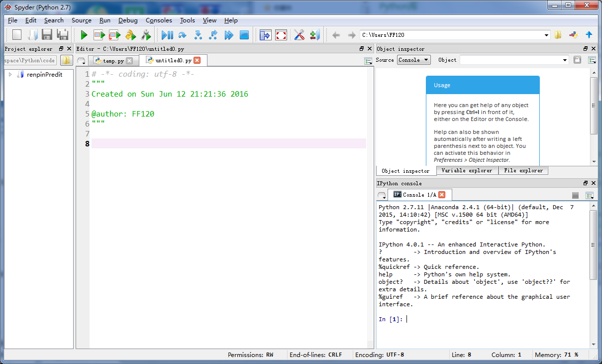
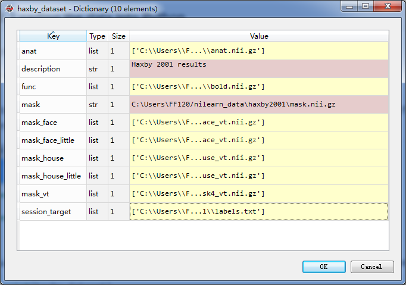

<!DOCTYPE html>
<html lang="zh">
<head><meta name="generator" content="Hexo 3.8.0">
    <meta charset="utf-8">
    
    <title>使用Python处理fMRI数据 | FEI&#39;s Blog</title>
    
    
        <meta name="keywords" content="fMRI">
    
    <meta name="viewport" content="width=device-width, initial-scale=1, maximum-scale=1">
    <meta name="description" content="Python是一种解释型、面向对象、动态数据类型的高级程序设计语言。目前主流的算法基本上都有Python的实现版本，所以能够使用Python处理fMRI数据对于直接使用多种多样的机器学习算法是十分有帮助的。 本文主要涉及的内容有Python,Scikit-lean,nibabel,nilean等。">
<meta name="keywords" content="fMRI">
<meta property="og:type" content="article">
<meta property="og:title" content="使用Python处理fMRI数据">
<meta property="og:url" content="http://ff120.github.io/hexoblog/2016/06/12/技术/认知神经科学/使用Python处理fMRI数据/index.html">
<meta property="og:site_name" content="FEI&#39;s Blog">
<meta property="og:description" content="Python是一种解释型、面向对象、动态数据类型的高级程序设计语言。目前主流的算法基本上都有Python的实现版本，所以能够使用Python处理fMRI数据对于直接使用多种多样的机器学习算法是十分有帮助的。 本文主要涉及的内容有Python,Scikit-lean,nibabel,nilean等。">
<meta property="og:locale" content="zh-Hans">
<meta property="og:image" content="http://ff120.github.io/hexoblog/2016/06/12/技术/认知神经科学/使用Python处理fMRI数据/spyder.png">
<meta property="og:image" content="http://ff120.github.io/hexoblog/2016/06/12/技术/认知神经科学/使用Python处理fMRI数据/haxy_database.png">
<meta property="og:image" content="http://ff120.github.io/hexoblog/2016/06/12/技术/认知神经科学/使用Python处理fMRI数据/svm_weights.png">
<meta property="og:updated_time" content="2019-03-28T00:54:59.713Z">
<meta name="twitter:card" content="summary">
<meta name="twitter:title" content="使用Python处理fMRI数据">
<meta name="twitter:description" content="Python是一种解释型、面向对象、动态数据类型的高级程序设计语言。目前主流的算法基本上都有Python的实现版本，所以能够使用Python处理fMRI数据对于直接使用多种多样的机器学习算法是十分有帮助的。 本文主要涉及的内容有Python,Scikit-lean,nibabel,nilean等。">
<meta name="twitter:image" content="http://ff120.github.io/hexoblog/2016/06/12/技术/认知神经科学/使用Python处理fMRI数据/spyder.png">
    

    
        <link rel="alternate" href="/atom.xml" title="FEI&#39;s Blog" type="application/atom+xml">
    

    
        <link rel="icon" href="/hexoblog/favicon.ico">
    

    <link rel="stylesheet" href="/hexoblog/libs/font-awesome/css/font-awesome.min.css">
    <link rel="stylesheet" href="/hexoblog/libs/open-sans/styles.css">
    <link rel="stylesheet" href="/hexoblog/libs/source-code-pro/styles.css">

    <link rel="stylesheet" href="/hexoblog/css/style.css">
    <script src="/hexoblog/libs/jquery/2.1.3/jquery.min.js"></script>
    <script src="/hexoblog/libs/jquery/plugins/cookie/1.4.1/jquery.cookie.js"></script>
    
    
        <link rel="stylesheet" href="/hexoblog/libs/lightgallery/css/lightgallery.min.css">
    
    
        <link rel="stylesheet" href="/hexoblog/libs/justified-gallery/justifiedGallery.min.css">
    
    
    
    


    
        <script async src="//busuanzi.ibruce.info/busuanzi/2.3/busuanzi.pure.mini.js"></script>
    
</head>
</html>
<body>
    <div id="container">
        <header id="header">
    <div id="header-main" class="header-inner">
        <div class="outer">
            <a href="/hexoblog/" id="logo">
                <i class="logo"></i>
                <span class="site-title">FEI&#39;s Blog</span>
            </a>
            <nav id="main-nav">
                
                    <a class="main-nav-link" href="/hexoblog/">首页</a>
                
                    <a class="main-nav-link" href="/hexoblog/archives">归档</a>
                
                    <a class="main-nav-link" href="/hexoblog/categories">分类</a>
                
                    <a class="main-nav-link" href="/hexoblog/tags">标签</a>
                
                    <a class="main-nav-link" href="/hexoblog/about">关于</a>
                
            </nav>
            
            <div id="search-form-wrap">

    <form class="search-form">
        <input type="text" class="ins-search-input search-form-input" placeholder="Rechercher">
        <button type="submit" class="search-form-submit"></button>
    </form>
    <div class="ins-search">
    <div class="ins-search-mask"></div>
    <div class="ins-search-container">
        <div class="ins-input-wrapper">
            <input type="text" class="ins-search-input" placeholder="Type something...">
            <span class="ins-close ins-selectable"><i class="fa fa-times-circle"></i></span>
        </div>
        <div class="ins-section-wrapper">
            <div class="ins-section-container"></div>
        </div>
    </div>
</div>
<script>
(function (window) {
    var INSIGHT_CONFIG = {
        TRANSLATION: {
            POSTS: 'Articles',
            PAGES: 'Pages',
            CATEGORIES: 'Catégories',
            TAGS: 'Tags',
            UNTITLED: '(Untitled)',
        },
        ROOT_URL: '/hexoblog/',
        CONTENT_URL: '/hexoblog/content.json',
    };
    window.INSIGHT_CONFIG = INSIGHT_CONFIG;
})(window);
</script>
<script src="/hexoblog/js/insight.js"></script>

</div>
        </div>
    </div>
    <div id="main-nav-mobile" class="header-sub header-inner">
        <table class="menu outer">
            <tr>
                
                    <td><a class="main-nav-link" href="/hexoblog/">首页</a></td>
                
                    <td><a class="main-nav-link" href="/hexoblog/archives">归档</a></td>
                
                    <td><a class="main-nav-link" href="/hexoblog/categories">分类</a></td>
                
                    <td><a class="main-nav-link" href="/hexoblog/tags">标签</a></td>
                
                    <td><a class="main-nav-link" href="/hexoblog/about">关于</a></td>
                
                <td>
                    
    <div class="search-form">
        <input type="text" class="ins-search-input search-form-input" placeholder="Rechercher">
    </div>

                </td>
            </tr>
        </table>
    </div>
</header>

        <div class="outer">
            
            
                <aside id="sidebar">
   
        
    <div class="widget-wrap" id="categories">
        <h3 class="widget-title">
            <span>Catégories</span>
            &nbsp;
            <a id="allExpand" href="#">
                <i class="fa fa-angle-double-down fa-2x"></i>
            </a>
        </h3>
        
        
        
         <ul class="unstyled" id="tree"> 
                    <li class="directory">
                        <a href="#" data-role="directory">
                            <i class="fa fa-folder"></i>
                            &nbsp;
                            心理学
                        </a>
                         <ul class="unstyled" id="tree"> 
                    <li class="directory">
                        <a href="#" data-role="directory">
                            <i class="fa fa-folder"></i>
                            &nbsp;
                            记忆魔法
                        </a>
                         <ul class="unstyled" id="tree">  <li class="file"><a href="/hexoblog/2019/04/03/心理学/记忆魔法/代码记忆法/">代码记忆法</a></li>  </ul> 
                    </li> 
                     </ul> 
                    </li> 
                    
                    <li class="directory open">
                        <a href="#" data-role="directory">
                            <i class="fa fa-folder-open"></i>
                            &nbsp;
                            技术
                        </a>
                         <ul class="unstyled" id="tree"> 
                    <li class="directory">
                        <a href="#" data-role="directory">
                            <i class="fa fa-folder"></i>
                            &nbsp;
                            Web开发
                        </a>
                         <ul class="unstyled" id="tree">  <li class="file"><a href="/hexoblog/2016/06/11/技术/Web开发/后台开发_How-to-install-Laravel-framework/">How to install Laravel framework</a></li>  <li class="file"><a href="/hexoblog/2016/06/11/技术/Web开发/后台开发_laravel-4-note-01/">laravel 4 note 01</a></li>  <li class="file"><a href="/hexoblog/2016/06/11/技术/Web开发/后台开发_Make-phpStorm-friendly-to-laravel/">Make phpStorm friendly to laravel</a></li>  <li class="file"><a href="/hexoblog/2016/06/11/技术/Web开发/后台开发_sublime-Text-tricks/">sublime Text tricks</a></li>  <li class="file"><a href="/hexoblog/2016/06/11/技术/Web开发/后台开发_think-php-note-01/">think php note 01</a></li>  <li class="file"><a href="/hexoblog/2016/06/11/技术/Web开发/后台开发_think-php-note-02/">think php note 02</a></li>  <li class="file"><a href="/hexoblog/2016/06/11/技术/Web开发/后台开发_think-php-note-03/">think php note 03</a></li>  <li class="file"><a href="/hexoblog/2016/06/11/技术/Web开发/后台开发_PHP编译less文件-lessphp的使用/">PHP编译less文件-lessphp的使用</a></li>  <li class="file"><a href="/hexoblog/2016/06/11/技术/Web开发/后台开发_Lavarel-后台组件frozenode的使用/">Lavarel 后台组件frozenode的使用</a></li>  <li class="file"><a href="/hexoblog/2016/06/11/技术/Web开发/后台开发_Linux常用命令/">Linux常用命令</a></li>  <li class="file"><a href="/hexoblog/2016/06/11/技术/Web开发/后台开发_Linux主机之间同步文件/">Linux主机之间同步文件</a></li>  <li class="file"><a href="/hexoblog/2016/06/11/技术/Web开发/后台开发_PHP基本操作/">PHP基本操作</a></li>  <li class="file"><a href="/hexoblog/2016/06/11/技术/Web开发/后台开发_短信验证码的实现/">短信验证码的实现</a></li>  <li class="file"><a href="/hexoblog/2016/06/11/技术/Web开发/后台开发_配置Apache支持使用HTTPS/">配置Apache支持使用HTTPS</a></li>  <li class="file"><a href="/hexoblog/2016/06/11/技术/Web开发/测试_使用Selenium测试UI/">测试_使用Selenium测试UI</a></li>  <li class="file"><a href="/hexoblog/2016/06/11/技术/Web开发/后台开发_PhpStorm常用快捷键/">PhpStorm常用快捷键</a></li>  <li class="file"><a href="/hexoblog/2016/06/11/技术/Web开发/微信开发_微信发送消息PHP-SDK/">微信发送消息PHP SDK</a></li>  <li class="file"><a href="/hexoblog/2016/06/11/技术/Web开发/微信开发_获取地理位置/">微信获取地理位置 </a></li>  <li class="file"><a href="/hexoblog/2016/06/11/技术/Web开发/微信开发_发送模板消息的代码/">微信发送模板消息的代码</a></li>  <li class="file"><a href="/hexoblog/2016/06/11/技术/Web开发/测试_Selenium-定位元素的几种方式/">测试_Selenium定位元素的几种方式</a></li>  <li class="file"><a href="/hexoblog/2016/06/11/技术/Web开发/测试_Selenium-Action/">测试_Selenium Action</a></li>  <li class="file"><a href="/hexoblog/2016/06/11/技术/Web开发/测试_Apache-JMeter的使用/">测试_Apache JMeter的使用</a></li>  <li class="file"><a href="/hexoblog/2016/06/12/技术/Web开发/后台开发_Apache-配置虚拟主机/">Apache 配置虚拟主机</a></li>  <li class="file"><a href="/hexoblog/2016/06/23/技术/Web开发/后台开发_改进PHP的var-dump-方法使之适应显示从数据库中查出来的数据/">改进PHP的var_dump()方法使之适应显示从数据库中查出来的数据</a></li>  <li class="file"><a href="/hexoblog/2016/06/23/技术/Web开发/后台开发_PHP读写XLS/">PHP读写XLS</a></li>  <li class="file"><a href="/hexoblog/2016/06/30/技术/Web开发/前端_jQuery-EasyUI-学习笔记/">JQuery EasyUI 学习笔记</a></li>  <li class="file"><a href="/hexoblog/2016/06/30/技术/Web开发/前端_bootsharp学习笔记/">Bootsharp学习笔记</a></li>  </ul> 
                    </li> 
                    
                    <li class="directory">
                        <a href="#" data-role="directory">
                            <i class="fa fa-folder"></i>
                            &nbsp;
                            专业术语
                        </a>
                         <ul class="unstyled" id="tree">  <li class="file"><a href="/hexoblog/2017/07/24/技术/专业术语/术语/">英语</a></li>  </ul> 
                    </li> 
                    
                    <li class="directory">
                        <a href="#" data-role="directory">
                            <i class="fa fa-folder"></i>
                            &nbsp;
                            大数据
                        </a>
                         <ul class="unstyled" id="tree">  <li class="file"><a href="/hexoblog/2016/06/23/技术/大数据/大数据_Spark环境下的Kmeans-Python实现/">Spark环境下的Kmeans-Python实现</a></li>  <li class="file"><a href="/hexoblog/2017/10/06/技术/大数据/大数据基础框架/">大数据基础框架</a></li>  </ul> 
                    </li> 
                    
                    <li class="directory">
                        <a href="#" data-role="directory">
                            <i class="fa fa-folder"></i>
                            &nbsp;
                            工具
                        </a>
                         <ul class="unstyled" id="tree"> 
                    <li class="directory">
                        <a href="#" data-role="directory">
                            <i class="fa fa-folder"></i>
                            &nbsp;
                            AutoHotKey
                        </a>
                         <ul class="unstyled" id="tree">  <li class="file"><a href="/hexoblog/2018/12/02/技术/工具/AutoHotKey/AutoHotKey非常有用的脚本/">AutoHotKey非常有用的脚本</a></li>  </ul> 
                    </li> 
                    
                    <li class="directory">
                        <a href="#" data-role="directory">
                            <i class="fa fa-folder"></i>
                            &nbsp;
                            Git
                        </a>
                         <ul class="unstyled" id="tree">  <li class="file"><a href="/hexoblog/2017/05/04/技术/工具/Git/GIT的使用01-基本功能/">GIT的使用01-基本功能</a></li>  <li class="file"><a href="/hexoblog/2018/07/29/技术/工具/Git/Git查询手册/">Git 手册</a></li>  </ul> 
                    </li> 
                    
                    <li class="directory">
                        <a href="#" data-role="directory">
                            <i class="fa fa-folder"></i>
                            &nbsp;
                            Hexo
                        </a>
                         <ul class="unstyled" id="tree">  <li class="file"><a href="/hexoblog/2016/06/12/技术/工具/Hexo/Hexo的使用02-同步/">Hexo的使用02-同步</a></li>  <li class="file"><a href="/hexoblog/2016/06/13/技术/工具/Hexo/Hexo的使用01-搭建/">Hexo的使用01-搭建</a></li>  <li class="file"><a href="/hexoblog/2017/04/12/技术/工具/Hexo/Hexo的使用05-Atom编辑器/">Hexo的使用05-Atom编辑器</a></li>  <li class="file"><a href="/hexoblog/2017/04/12/技术/工具/Hexo/Hexo的使用04-数学公式/">Hexo的使用04-数学公式</a></li>  <li class="file"><a href="/hexoblog/2017/05/05/技术/工具/Hexo/Hexo的使用03-迁移/">Hexo的使用03-迁移</a></li>  <li class="file"><a href="/hexoblog/2017/07/17/技术/工具/Hexo/Hexo的使用06-使用gist存储代码片段/">Hexo中使用gist存储代码片段</a></li>  </ul> 
                    </li> 
                    
                    <li class="directory">
                        <a href="#" data-role="directory">
                            <i class="fa fa-folder"></i>
                            &nbsp;
                            Visio
                        </a>
                         <ul class="unstyled" id="tree">  <li class="file"><a href="/hexoblog/2017/05/05/技术/工具/Visio/VISIO的使用01-基础入门/">VISIO的使用01-基础入门</a></li>  </ul> 
                    </li> 
                    
                    <li class="directory">
                        <a href="#" data-role="directory">
                            <i class="fa fa-folder"></i>
                            &nbsp;
                            图片处理
                        </a>
                         <ul class="unstyled" id="tree">  <li class="file"><a href="/hexoblog/2017/05/05/技术/工具/图片处理/图片处理02-一寸照片/">图片处理02-一寸照片</a></li>  <li class="file"><a href="/hexoblog/2017/05/17/技术/工具/图片处理/图片处理01-合并多张图片/">图片处理01-合并多张图片</a></li>  </ul> 
                    </li> 
                    
                    <li class="directory">
                        <a href="#" data-role="directory">
                            <i class="fa fa-folder"></i>
                            &nbsp;
                            正则表达式
                        </a>
                         <ul class="unstyled" id="tree">  <li class="file"><a href="/hexoblog/2018/07/29/技术/工具/正则表达式/正则表达式/">正则表达式</a></li>  </ul> 
                    </li> 
                    
                    <li class="directory">
                        <a href="#" data-role="directory">
                            <i class="fa fa-folder"></i>
                            &nbsp;
                            编程IDE
                        </a>
                         <ul class="unstyled" id="tree"> 
                    <li class="directory">
                        <a href="#" data-role="directory">
                            <i class="fa fa-folder"></i>
                            &nbsp;
                            Anaconda
                        </a>
                         <ul class="unstyled" id="tree">  <li class="file"><a href="/hexoblog/2017/04/18/技术/工具/编程IDE/Anaconda/Anaconda的使用01-基础/">Anaconda的使用01-基础</a></li>  </ul> 
                    </li> 
                    
                    <li class="directory">
                        <a href="#" data-role="directory">
                            <i class="fa fa-folder"></i>
                            &nbsp;
                            JetBrainsCLion
                        </a>
                         <ul class="unstyled" id="tree">  <li class="file"><a href="/hexoblog/2017/05/04/技术/工具/编程IDE/JetBrainsCLion/JetBrainsCLion的使用01-入门/">JetBrainsCLion的使用01-入门</a></li>  </ul> 
                    </li> 
                    
                    <li class="directory">
                        <a href="#" data-role="directory">
                            <i class="fa fa-folder"></i>
                            &nbsp;
                            VSCode
                        </a>
                         <ul class="unstyled" id="tree">  <li class="file"><a href="/hexoblog/2017/07/24/技术/工具/编程IDE/VSCode/Visual-Studio-Code使用技巧/">Visual Studio Code使用技巧</a></li>  </ul> 
                    </li> 
                     </ul> 
                    </li> 
                    
                    <li class="directory">
                        <a href="#" data-role="directory">
                            <i class="fa fa-folder"></i>
                            &nbsp;
                            网络软件
                        </a>
                         <ul class="unstyled" id="tree">  <li class="file"><a href="/hexoblog/2016/06/12/技术/工具/网络软件/Windows全局代理软件Proxifier/">Windows全局代理软件Proxifier</a></li>  <li class="file"><a href="/hexoblog/2016/06/12/技术/工具/网络软件/Windows手工修改路由表/">Windows手工修改路由表</a></li>  </ul> 
                    </li> 
                     </ul> 
                    </li> 
                    
                    <li class="directory">
                        <a href="#" data-role="directory">
                            <i class="fa fa-folder"></i>
                            &nbsp;
                            数据库
                        </a>
                         <ul class="unstyled" id="tree">  <li class="file"><a href="/hexoblog/2016/06/11/技术/数据库/数据库_Redis入门/">Redis入门</a></li>  <li class="file"><a href="/hexoblog/2016/06/12/技术/数据库/数据库_使用Database-Configuration-Assist-工具创建oracle数据库/">使用Database Configuration Assist 工具创建oracle数据库</a></li>  <li class="file"><a href="/hexoblog/2017/11/02/技术/数据库/SQL/">SQL</a></li>  </ul> 
                    </li> 
                    
                    <li class="directory">
                        <a href="#" data-role="directory">
                            <i class="fa fa-folder"></i>
                            &nbsp;
                            数据结构和算法
                        </a>
                         <ul class="unstyled" id="tree">  <li class="file"><a href="/hexoblog/2017/03/21/技术/数据结构和算法/算法专题_二维数组/">算法专题_二维数组</a></li>  <li class="file"><a href="/hexoblog/2017/03/21/技术/数据结构和算法/算法专题_矩阵和图/">矩阵和用矩阵表示的图的相关问题</a></li>  <li class="file"><a href="/hexoblog/2017/03/21/技术/数据结构和算法/算法专题_位运算/">算法专题_位运算</a></li>  <li class="file"><a href="/hexoblog/2017/03/23/技术/数据结构和算法/算法专题_链表/">算法专题_链表</a></li>  <li class="file"><a href="/hexoblog/2017/04/05/技术/数据结构和算法/算法专题_动态规划/">算法专题_动态规划</a></li>  <li class="file"><a href="/hexoblog/2017/04/06/技术/数据结构和算法/算法专题_图/">算法专题_图问题</a></li>  <li class="file"><a href="/hexoblog/2017/04/08/技术/数据结构和算法/做过的算法题汇总表/">做过的算法题汇总表</a></li>  <li class="file"><a href="/hexoblog/2017/04/09/技术/数据结构和算法/算法专题_二叉树/">算法专题_二叉树</a></li>  <li class="file"><a href="/hexoblog/2017/04/09/技术/数据结构和算法/算法专题_通用树结构/">算法专题_通用树结构</a></li>  <li class="file"><a href="/hexoblog/2017/04/10/技术/数据结构和算法/算法专题_大数据和空间限制/">算法专题_大数据和空间限制</a></li>  <li class="file"><a href="/hexoblog/2017/04/10/技术/数据结构和算法/算法专题_排列组合/">算法专题_排列组合</a></li>  <li class="file"><a href="/hexoblog/2017/04/11/技术/数据结构和算法/本地代码集锦/">本地代码集锦</a></li>  <li class="file"><a href="/hexoblog/2017/04/12/技术/数据结构和算法/算法专题_栈和队列/">算法专题_栈和队列</a></li>  <li class="file"><a href="/hexoblog/2017/04/16/技术/数据结构和算法/算法专题_排序算法/">算法专题_排序算法</a></li>  <li class="file"><a href="/hexoblog/2017/04/17/技术/数据结构和算法/算法专题_算法总结/">算法专题_算法总结</a></li>  <li class="file"><a href="/hexoblog/2017/05/02/技术/数据结构和算法/算法专题_一维数组/">算法专题_一维数组</a></li>  <li class="file"><a href="/hexoblog/2017/05/05/技术/数据结构和算法/算法专题_图之网络流/">算法专题_图之网络流</a></li>  <li class="file"><a href="/hexoblog/2017/05/06/技术/数据结构和算法/算法专题_图之最短路径/">算法专题_图之最短路径</a></li>  <li class="file"><a href="/hexoblog/2017/05/06/技术/数据结构和算法/算法专题_最小生成树/">算法专题_最小生成树</a></li>  <li class="file"><a href="/hexoblog/2017/05/06/技术/数据结构和算法/算法专题_霍夫曼编码/">算法专题_霍夫曼编码(哈夫曼编码)</a></li>  <li class="file"><a href="/hexoblog/2017/05/07/技术/数据结构和算法/Kickstart-Round-B-2017/">Kickstart Round B 2017</a></li>  <li class="file"><a href="/hexoblog/2017/05/08/技术/数据结构和算法/算法专题_模运算/">算法专题_模运算</a></li>  <li class="file"><a href="/hexoblog/2017/05/09/技术/数据结构和算法/算法专题_素数问题/">算法专题_素数问题</a></li>  <li class="file"><a href="/hexoblog/2017/05/11/技术/数据结构和算法/算法专题_计算几何/">算法专题_计算几何</a></li>  <li class="file"><a href="/hexoblog/2017/05/27/技术/数据结构和算法/计蒜之道2017程序设计大赛/">计蒜之道2017程序设计大赛</a></li>  <li class="file"><a href="/hexoblog/2017/05/28/技术/数据结构和算法/算法专题_字符串匹配/">算法专题_字符串匹配</a></li>  <li class="file"><a href="/hexoblog/2017/07/12/技术/数据结构和算法/四等分数组/">四等分数组</a></li>  <li class="file"><a href="/hexoblog/2017/07/12/技术/数据结构和算法/矩阵的遍历/">矩阵的遍历</a></li>  <li class="file"><a href="/hexoblog/2017/07/20/技术/数据结构和算法/N皇后问题/">N皇后问题</a></li>  <li class="file"><a href="/hexoblog/2017/07/23/技术/数据结构和算法/算法专题_线段树/">算法专题_线段树</a></li>  <li class="file"><a href="/hexoblog/2017/07/23/技术/数据结构和算法/算法专题_树状数组/">算法专题_树状数组</a></li>  <li class="file"><a href="/hexoblog/2017/07/23/技术/数据结构和算法/算法专题_并查集/">算法专题_并查集</a></li>  <li class="file"><a href="/hexoblog/2017/07/26/技术/数据结构和算法/算法专题_链表2/">算法专题_链表2</a></li>  <li class="file"><a href="/hexoblog/2017/08/06/技术/数据结构和算法/算法专题_二叉堆/">算法专题_二叉堆</a></li>  <li class="file"><a href="/hexoblog/2017/08/07/技术/数据结构和算法/算法专题_快速排序/">算法专题_快速排序</a></li>  <li class="file"><a href="/hexoblog/2017/08/07/技术/数据结构和算法/算法专题_归并排序/">算法专题_归并排序</a></li>  <li class="file"><a href="/hexoblog/2017/08/13/技术/数据结构和算法/算法专题-hihocoder/">算法专题_hihocoder</a></li>  <li class="file"><a href="/hexoblog/2017/08/17/技术/数据结构和算法/算法专题-贪心法/">算法专题_贪心法</a></li>  <li class="file"><a href="/hexoblog/2017/08/18/技术/数据结构和算法/阿里在线测评-兔子繁殖问题/">阿里笔试</a></li>  <li class="file"><a href="/hexoblog/2017/08/22/技术/数据结构和算法/今日头条-在线编程题/">今日头条_在线编程题</a></li>  <li class="file"><a href="/hexoblog/2017/08/23/技术/数据结构和算法/算法专题-字典树-Trie树/">算法专题_字典树(Trie树)</a></li>  <li class="file"><a href="/hexoblog/2017/09/23/技术/数据结构和算法/算法专题_二叉树2/">算法专题_二叉树2</a></li>  <li class="file"><a href="/hexoblog/2017/09/27/技术/数据结构和算法/手写代码-其他/">手写代码-其他</a></li>  <li class="file"><a href="/hexoblog/2017/10/03/技术/数据结构和算法/算法专题-常见题目/">算法专题_常见题目</a></li>  </ul> 
                    </li> 
                    
                    <li class="directory">
                        <a href="#" data-role="directory">
                            <i class="fa fa-folder"></i>
                            &nbsp;
                            机器学习
                        </a>
                         <ul class="unstyled" id="tree"> 
                    <li class="directory">
                        <a href="#" data-role="directory">
                            <i class="fa fa-folder"></i>
                            &nbsp;
                            深度学习
                        </a>
                         <ul class="unstyled" id="tree">  <li class="file"><a href="/hexoblog/2017/03/22/技术/机器学习/深度学习/深度学习_Theano使用技巧/">深度学习_Theano使用技巧</a></li>  <li class="file"><a href="/hexoblog/2017/04/18/技术/机器学习/深度学习/深度学习_基本概念/">深度学习_基本概念</a></li>  <li class="file"><a href="/hexoblog/2017/04/18/技术/机器学习/深度学习/深度学习_利用神经网络识别手写数字/">深度学习__利用神经网络识别手写数字</a></li>  <li class="file"><a href="/hexoblog/2017/04/19/技术/机器学习/深度学习/深度学习_反向传播算法及简单实例/">深度学习_反向传播算法及简单实例</a></li>  <li class="file"><a href="/hexoblog/2017/04/19/技术/机器学习/深度学习/深度学习_Keras使用技巧/">深度学习_Keras使用技巧</a></li>  <li class="file"><a href="/hexoblog/2017/04/20/技术/机器学习/深度学习/深度学习_使用keras实现autoencoder/">深度学习_使用keras实现autoencoder</a></li>  <li class="file"><a href="/hexoblog/2017/04/20/技术/机器学习/深度学习/深度学习_卷积神经网络/">深度学习_卷积神经网络</a></li>  <li class="file"><a href="/hexoblog/2017/04/27/技术/机器学习/深度学习/深度学习_使用autoencoder自动提取特征/">深度学习_使用autoencoder自动提取特征</a></li>  <li class="file"><a href="/hexoblog/2017/05/10/技术/机器学习/深度学习/深度学习_递归神经网络(RNN)/">深度学习_递归神经网络(RNN)</a></li>  <li class="file"><a href="/hexoblog/2017/05/10/技术/机器学习/深度学习/深度学习_限制波尔茨曼向量机(RBM)/">深度学习_限制波尔茨曼向量机(RBM)</a></li>  <li class="file"><a href="/hexoblog/2017/05/12/技术/机器学习/深度学习/深度学习_TensorFlow使用技巧/">深度学习_TensorFlow使用技巧</a></li>  </ul> 
                    </li> 
                     <li class="file"><a href="/hexoblog/2016/06/16/技术/机器学习/机器学习_Scikit-Learn-ManyClassifier/">同时使用多个分类器(Scikit-Learn)</a></li>  <li class="file"><a href="/hexoblog/2016/06/16/技术/机器学习/机器学习_范数/">机器学习_范数</a></li>  <li class="file"><a href="/hexoblog/2016/06/20/技术/机器学习/机器学习_学习路线/">机器学习_学习路线</a></li>  <li class="file"><a href="/hexoblog/2016/06/20/技术/机器学习/机器学习_手写数字识别/">机器学习_手写数字识别</a></li>  <li class="file"><a href="/hexoblog/2016/07/11/技术/机器学习/机器学习_Matplolib使用技巧/">机器学习_Matplolib使用技巧</a></li>  <li class="file"><a href="/hexoblog/2017/03/22/技术/机器学习/机器学习_人脸识别/">机器学习_人脸识别</a></li>  <li class="file"><a href="/hexoblog/2017/05/04/技术/机器学习/机器学习_Matlab使用技巧/">机器学习_Matlab使用技巧</a></li>  <li class="file"><a href="/hexoblog/2017/05/11/技术/机器学习/机器学习_时间序列预测分析算法/">机器学习_时间序列预测分析算法</a></li>  <li class="file"><a href="/hexoblog/2017/05/14/技术/机器学习/机器学习_Scikit-Learn使用技巧/">深度学习_Scikit-Learn机器学习算法的使用</a></li>  <li class="file"><a href="/hexoblog/2017/05/15/技术/机器学习/机器学习_时间序列预测の广告效果预测/">机器学习_时间序列预测の广告效果预测</a></li>  <li class="file"><a href="/hexoblog/2017/05/15/技术/机器学习/机器学习_算法汇总/">机器学习_算法汇总</a></li>  <li class="file"><a href="/hexoblog/2017/05/17/技术/机器学习/机器学习_Pandas使用技巧/">深度学习_Pandas使用技巧</a></li>  <li class="file"><a href="/hexoblog/2017/05/19/技术/机器学习/机器学习_感知机/">机器学习_感知机</a></li>  <li class="file"><a href="/hexoblog/2017/05/19/技术/机器学习/机器学习_逻辑回归/">机器学习_逻辑回归</a></li>  <li class="file"><a href="/hexoblog/2017/05/22/技术/机器学习/机器学习_损失函数/">机器学习_损失函数</a></li>  <li class="file"><a href="/hexoblog/2017/06/03/技术/机器学习/机器学习_分类器性能的度量/">机器学习_分类器性能的度量</a></li>  <li class="file"><a href="/hexoblog/2017/06/15/技术/机器学习/机器学习_Scipy使用技巧/">机器学习_Scipy使用技巧</a></li>  <li class="file"><a href="/hexoblog/2017/06/15/技术/机器学习/机器学习_Python使用技巧/">深度学习_Python使用技巧</a></li>  <li class="file"><a href="/hexoblog/2017/07/23/技术/机器学习/机器学习-Numpy使用技巧/">机器学习_Numpy使用技巧</a></li>  <li class="file"><a href="/hexoblog/2017/10/15/技术/机器学习/KNN-with-C/">KNN with C++</a></li>  <li class="file"><a href="/hexoblog/2017/11/04/技术/机器学习/机器学习-绪论-基本概念/">机器学习-绪论-基本概念</a></li>  <li class="file"><a href="/hexoblog/2017/11/04/技术/机器学习/机器学习-第一章-逻辑回归/">机器学习-第一章-逻辑回归</a></li>  <li class="file"><a href="/hexoblog/2017/11/04/技术/机器学习/机器学习-第二章-决策树/">机器学习-第二章-决策树</a></li>  <li class="file"><a href="/hexoblog/2017/11/04/技术/机器学习/机器学习-第三章-朴素贝叶斯/">机器学习-第三章-朴素贝叶斯</a></li>  <li class="file"><a href="/hexoblog/2017/11/04/技术/机器学习/机器学习-第四章-支持向量机/">机器学习-第四章-支持向量机</a></li>  <li class="file"><a href="/hexoblog/2017/11/04/技术/机器学习/机器学习-第五章-最近邻/">机器学习-第五章-最近邻</a></li>  <li class="file"><a href="/hexoblog/2017/11/04/技术/机器学习/机器学习-第六章-kmeans/">机器学习-第六章-kmeans</a></li>  <li class="file"><a href="/hexoblog/2017/11/04/技术/机器学习/机器学习-第七章-感知机/">机器学习-第七章-感知机</a></li>  </ul> 
                    </li> 
                    
                    <li class="directory">
                        <a href="#" data-role="directory">
                            <i class="fa fa-folder"></i>
                            &nbsp;
                            编程语言
                        </a>
                         <ul class="unstyled" id="tree"> 
                    <li class="directory">
                        <a href="#" data-role="directory">
                            <i class="fa fa-folder"></i>
                            &nbsp;
                            C++
                        </a>
                         <ul class="unstyled" id="tree">  <li class="file"><a href="/hexoblog/2017/04/07/技术/编程语言/C++/C++语言技巧/">C++语言技巧</a></li>  </ul> 
                    </li> 
                     </ul> 
                    </li> 
                    
                    <li class="directory">
                        <a href="#" data-role="directory">
                            <i class="fa fa-folder"></i>
                            &nbsp;
                            计算机基础
                        </a>
                         <ul class="unstyled" id="tree"> 
                    <li class="directory">
                        <a href="#" data-role="directory">
                            <i class="fa fa-folder"></i>
                            &nbsp;
                            计算机网络
                        </a>
                         <ul class="unstyled" id="tree">  <li class="file"><a href="/hexoblog/2016/06/12/技术/计算机基础/计算机网络/网络_校园网多终端上网方案/">校园网多终端上网方案</a></li>  <li class="file"><a href="/hexoblog/2017/07/12/技术/计算机基础/计算机网络/计算机网络/">计算机网络</a></li>  </ul> 
                    </li> 
                     </ul> 
                    </li> 
                    
                    <li class="directory open">
                        <a href="#" data-role="directory">
                            <i class="fa fa-folder-open"></i>
                            &nbsp;
                            认知神经科学
                        </a>
                         <ul class="unstyled" id="tree">  <li class="file"><a href="/hexoblog/2016/06/12/技术/认知神经科学/文献检索方法/">文献检索方法</a></li>  <li class="file"><a href="/hexoblog/2016/06/12/技术/认知神经科学/参考文献书写格式/">参考文献书写格式</a></li>  <li class="file active"><a href="/hexoblog/2016/06/12/技术/认知神经科学/使用Python处理fMRI数据/">使用Python处理fMRI数据</a></li>  <li class="file"><a href="/hexoblog/2016/06/22/技术/认知神经科学/中英文对照/">中英文对照</a></li>  <li class="file"><a href="/hexoblog/2017/01/03/技术/认知神经科学/circos入门教程/">circos入门教程</a></li>  <li class="file"><a href="/hexoblog/2017/03/08/技术/认知神经科学/基于视频的车牌识别和流量统计/">基于视频的车牌识别和流量统计</a></li>  <li class="file"><a href="/hexoblog/2017/03/08/技术/认知神经科学/基于贝叶斯网络和隐性知识的AU识别研究/">基于贝叶斯网络和隐性知识的AU识别研究</a></li>  <li class="file"><a href="/hexoblog/2017/03/09/技术/认知神经科学/基于连接的脑信息解码研究/">基于连接信息的脑信息解码研究</a></li>  <li class="file"><a href="/hexoblog/2017/03/09/技术/认知神经科学/认知神经科学系列目录/">认知神经科学系列目录</a></li>  <li class="file"><a href="/hexoblog/2017/03/20/技术/认知神经科学/多被试多RUN批量预处理(SPM)/">多被试多RUN批量预处理(SPM)</a></li>  <li class="file"><a href="/hexoblog/2017/03/20/技术/认知神经科学/SPM预处理中的常用操作/">SPM预处理中的常用操作</a></li>  <li class="file"><a href="/hexoblog/2017/03/20/技术/认知神经科学/动态因果模型(DCM)的批量定义和估计/">动态因果模型(DCM)的批量定义和估计</a></li>  <li class="file"><a href="/hexoblog/2017/04/13/技术/认知神经科学/使用SPM做Second-Level分析/">使用SPM做Second_Level分析</a></li>  <li class="file"><a href="/hexoblog/2017/04/13/技术/认知神经科学/DCM模型的定义和估计/">DCM模型的定义和估计</a></li>  <li class="file"><a href="/hexoblog/2017/04/14/技术/认知神经科学/XJVIEW的使用技巧/">XJVIEW的使用技巧</a></li>  <li class="file"><a href="/hexoblog/2017/04/14/技术/认知神经科学/SPM中函数的修改和使用/">SPM中函数的修改和使用</a></li>  <li class="file"><a href="/hexoblog/2017/05/02/技术/认知神经科学/fMRI中常用的工具包/">fMRI中常用的工具包</a></li>  <li class="file"><a href="/hexoblog/2017/05/11/技术/认知神经科学/使用3D卷积神经神经网络提取脑成像数据的特征/">使用3D卷积神经神经网络提取脑成像数据的特征</a></li>  <li class="file"><a href="/hexoblog/2017/05/14/技术/认知神经科学/fMRI相关的资源汇总/">fMRI相关的资源汇总</a></li>  <li class="file"><a href="/hexoblog/2017/05/30/技术/认知神经科学/fMRI相关问题汇总/">fMRI相关问题汇总</a></li>  </ul> 
                    </li> 
                     </ul> 
                    </li> 
                    
                    <li class="directory">
                        <a href="#" data-role="directory">
                            <i class="fa fa-folder"></i>
                            &nbsp;
                            收藏夹
                        </a>
                         <ul class="unstyled" id="tree">  <li class="file"><a href="/hexoblog/2017/03/22/收藏夹/博客集锦/">博客收藏</a></li>  </ul> 
                    </li> 
                     </ul> 
    </div>
    <script>
        $(document).ready(function() {
            var iconFolderOpenClass  = 'fa-folder-open';
            var iconFolderCloseClass = 'fa-folder';
            var iconAllExpandClass = 'fa-angle-double-down';
            var iconAllPackClass = 'fa-angle-double-up';
            // Handle directory-tree expansion:
            // 左键单独展开目录
            $(document).on('click', '#categories a[data-role="directory"]', function (event) {
                event.preventDefault();

                var icon = $(this).children('.fa');
                var expanded = icon.hasClass(iconFolderOpenClass);
                var subtree = $(this).siblings('ul');
                icon.removeClass(iconFolderOpenClass).removeClass(iconFolderCloseClass);
                if (expanded) {
                    if (typeof subtree != 'undefined') {
                        subtree.slideUp({ duration: 100 });
                    }
                    icon.addClass(iconFolderCloseClass);
                } else {
                    if (typeof subtree != 'undefined') {
                        subtree.slideDown({ duration: 100 });
                    }
                    icon.addClass(iconFolderOpenClass);
                }
            });
            // 右键展开下属所有目录
            $('#categories a[data-role="directory"]').bind("contextmenu", function(event){
                event.preventDefault();
                
                var icon = $(this).children('.fa');
                var expanded = icon.hasClass(iconFolderOpenClass);
                var listNode = $(this).siblings('ul');
                var subtrees = $.merge(listNode.find('li ul'), listNode);
                var icons = $.merge(listNode.find('.fa'), icon);
                icons.removeClass(iconFolderOpenClass).removeClass(iconFolderCloseClass);
                if(expanded) {
                    subtrees.slideUp({ duration: 100 });
                    icons.addClass(iconFolderCloseClass);
                } else {
                    subtrees.slideDown({ duration: 100 });
                    icons.addClass(iconFolderOpenClass);
                }
            })
            // 展开关闭所有目录按钮
            $(document).on('click', '#allExpand', function (event) {
                event.preventDefault();
                
                var icon = $(this).children('.fa');
                var expanded = icon.hasClass(iconAllExpandClass);
                icon.removeClass(iconAllExpandClass).removeClass(iconAllPackClass);
                if(expanded) {
                    $('#sidebar .fa.fa-folder').removeClass('fa-folder').addClass('fa-folder-open')
                    $('#categories li ul').slideDown({ duration: 100 });
                    icon.addClass(iconAllPackClass);
                } else {
                    $('#sidebar .fa.fa-folder-open').removeClass('fa-folder-open').addClass('fa-folder')
                    $('#categories li ul').slideUp({ duration: 100 });
                    icon.addClass(iconAllExpandClass);
                }
            });  
        });
    </script>

    
    <div id="toTop" class="fa fa-angle-up"></div>
</aside>
            
            <section id="main"><article id="post-技术/认知神经科学/使用Python处理fMRI数据" class="article article-type-post" itemscope="" itemprop="blogPost">
    <div class="article-inner">
        
        
            <header class="article-header">
                
                    <div class="article-meta">
                        
    <div class="article-category">
    	<i class="fa fa-folder"></i>
        <a class="article-category-link" href="/hexoblog/categories/技术/">技术</a><i class="fa fa-angle-right"></i><a class="article-category-link" href="/hexoblog/categories/技术/认知神经科学/">认知神经科学</a>
    </div>

                        
    <div class="article-tag">
        <i class="fa fa-tag"></i>
        <a class="tag-link" href="/hexoblog/tags/fMRI/">fMRI</a>
    </div>

                        
    <div class="article-date">
        <i class="fa fa-calendar"></i>
        <a href="/hexoblog/2016/06/12/技术/认知神经科学/使用Python处理fMRI数据/">
            <time datetime="2016-06-12T12:50:50.000Z" itemprop="datePublished">2016-06-12</time>
        </a>
    </div>


                        
                            <i class="fa fa-bar-chart"></i>
                            <span id="busuanzi_container_site_pv"><span id="busuanzi_value_page_pv"></span></span>    
                        
                        
                            <div class="article-meta-button">
                                <a href="https://github.com/FF120/hexoblog/raw/master/source/_posts/技术/认知神经科学/使用Python处理fMRI数据.md"> Source </a>
                            </div>
                            <div class="article-meta-button">
                                <a href="https://github.com/FF120/hexoblog/edit/master/source/_posts/技术/认知神经科学/使用Python处理fMRI数据.md"> Edit </a>
                            </div>
                            <div class="article-meta-button">
                                <a href="https://github.com/FF120/hexoblog/commits/master/source/_posts/技术/认知神经科学/使用Python处理fMRI数据.md"> History </a>
                            </div>
                        
                    </div>
                
                
    
        <h1 class="article-title" itemprop="name">
            使用Python处理fMRI数据
        </h1>
    

            </header>
        
        
        <div class="article-entry" itemprop="articleBody">
        
        
            
                <div id="toc" class="toc-article">
                <strong class="toc-title">Catalogue</strong>
                    <ol class="toc"><li class="toc-item toc-level-2"><a class="toc-link" href="#nibabel"><span class="toc-number">1.</span> <span class="toc-text">NiBabel</span></a><ol class="toc-child"><li class="toc-item toc-level-3"><a class="toc-link" href="#神经影像数据格式"><span class="toc-number">1.1.</span> <span class="toc-text">神经影像数据格式</span></a></li></ol></li><li class="toc-item toc-level-2"><a class="toc-link" href="#nilearn"><span class="toc-number">2.</span> <span class="toc-text">Nilearn</span></a><ol class="toc-child"><li class="toc-item toc-level-3"><a class="toc-link" href="#实验和数据介绍"><span class="toc-number">2.1.</span> <span class="toc-text">实验和数据介绍</span></a><ol class="toc-child"><li class="toc-item toc-level-4"><a class="toc-link" href="#数据结构"><span class="toc-number">2.1.1.</span> <span class="toc-text">数据结构</span></a></li></ol></li><li class="toc-item toc-level-3"><a class="toc-link" href="#解码实验"><span class="toc-number">2.2.</span> <span class="toc-text">解码实验</span></a><ol class="toc-child"><li class="toc-item toc-level-4"><a class="toc-link" href="#特征选择"><span class="toc-number">2.2.1.</span> <span class="toc-text">特征选择</span></a><ol class="toc-child"><li class="toc-item toc-level-5"><a class="toc-link" href="#使用mask"><span class="toc-number">2.2.1.1.</span> <span class="toc-text">使用mask</span></a></li><li class="toc-item toc-level-5"><a class="toc-link" href="#使用f检验"><span class="toc-number">2.2.1.2.</span> <span class="toc-text">使用F检验</span></a></li></ol></li><li class="toc-item toc-level-4"><a class="toc-link" href="#数据准备"><span class="toc-number">2.2.2.</span> <span class="toc-text">数据准备</span></a></li><li class="toc-item toc-level-4"><a class="toc-link" href="#模型训练和测试"><span class="toc-number">2.2.3.</span> <span class="toc-text">模型训练和测试</span></a></li></ol></li></ol></li></ol>
                </div>
            
        
        
            <p>Python是一种解释型、面向对象、动态数据类型的高级程序设计语言。目前主流的算法基本上都有Python的实现版本，所以能够使用Python处理fMRI数据对于直接使用多种多样的机器学习算法是十分有帮助的。 本文主要涉及的内容有Python,Scikit-lean,nibabel,nilean等。 <a id="more"></a> ## Python 安装Python环境，Windows下使用建议使用Anaconda,一个类似matlab界面的Python环境。 <a href="https://www.continuum.io/downloads" target="_blank" rel="noopener">Anaconda</a> 安装完成后，打开<code>cmd</code>键入<code>spyder</code>打开软件  ## scikit-learn scikit-learn是一个很有名的机器学习库，设计了一系列的通用接口以使不同的机器学习算法符合相似的流程。里面实现了大部分目前流行的机器学习算法，而且文档良好，更新速度很快。 &gt;安装 <figure class="highlight bash"><table><tr><td class="gutter"><pre><span class="line">1</span><br></pre></td><td class="code"><pre><span class="line">conda install scikit-learn</span><br></pre></td></tr></table></figure></p>
<blockquote>
<p>卸载 <figure class="highlight bash"><table><tr><td class="gutter"><pre><span class="line">1</span><br></pre></td><td class="code"><pre><span class="line">conda remove scikit-learn</span><br></pre></td></tr></table></figure></p>
</blockquote>
<blockquote>
<p>更新 <figure class="highlight bash"><table><tr><td class="gutter"><pre><span class="line">1</span><br></pre></td><td class="code"><pre><span class="line">conda update scikit-learn</span><br></pre></td></tr></table></figure></p>
</blockquote>
<h2 id="nibabel">NiBabel</h2>
<p>NiBabel是一个读写常见的神经影像数据的Python语言的程序包，可以实现读取和生成大部分常见的神经影像数据格式。 &gt;安装 <figure class="highlight bash"><table><tr><td class="gutter"><pre><span class="line">1</span><br></pre></td><td class="code"><pre><span class="line">pip install nibabel</span><br></pre></td></tr></table></figure></p>
<blockquote>
<p>测试是否成功安装 在Python控制台键入<code>import nibabel</code>没有报错信息证明安装成功</p>
</blockquote>
<h3 id="神经影像数据格式">神经影像数据格式</h3>
<p>使用fMRI得到的原始数据一般是.IMA结尾的数据，每个TR一个文件，我们可以使用<a href="">mricron</a>的<code>dcm2niigui.exe</code>转换成.nii结尾的4D文件格式 ### 读取数据 <figure class="highlight python"><table><tr><td class="gutter"><pre><span class="line">1</span><br><span class="line">2</span><br><span class="line">3</span><br></pre></td><td class="code"><pre><span class="line"><span class="keyword">import</span> nibabel <span class="keyword">as</span> nib </span><br><span class="line"></span><br><span class="line">img = nib.load(<span class="string">"image.nii"</span>)</span><br></pre></td></tr></table></figure></p>
<p>以上代码将image.nii文件读取到<code>img</code>中，<code>img</code>是<code>nibabel.nifti1.Nifti1Image</code>类型的。 一个<code>nibabel.nifti1.Nifti1Image</code>类型的数据包含三个主要的部分 - image data array 存放图像数据的矩阵 - an affine array 定义了图像数据在参考空间的位置 - image metadata 存放图像的一些属性信息，采集设备名称，体素的大小，扫描层数等等。 &gt;image data array 虽然存储了每个体素的取值信息，但是并没有存储位置信息。也就是说我们并不知道某个体素来自由大脑哪个具体的位置 &gt;affine数组定义了一个从image data array 到标准的参考空间的映射，每个体素经过这个数组映射后都会到一个标准的参考空间，在那个空间中，我们精确的知道每个体素所处的位置。 &gt;结构像和功能像扫描的区域和方向均有所差异，所以都需要使用affine数组映射到参考空间，以确定体素在真实大脑中的位置 ### 显示数据</p>
<figure class="highlight python"><table><tr><td class="gutter"><pre><span class="line">1</span><br><span class="line">2</span><br><span class="line">3</span><br><span class="line">4</span><br><span class="line">5</span><br><span class="line">6</span><br><span class="line">7</span><br><span class="line">8</span><br><span class="line">9</span><br><span class="line">10</span><br></pre></td><td class="code"><pre><span class="line">img_array = img.get_data() //get image data array</span><br><span class="line">affine_array = img.affine //get the affine array</span><br><span class="line">img_head = img.header; //get image metadata</span><br><span class="line"></span><br><span class="line">//获取其他一些信息的方法</span><br><span class="line">img.shape // 获得维数信息</span><br><span class="line">img.get_data_dtype() // 获得数据类型</span><br><span class="line">img_head.get_data_dtype() // 获得头信息的数据类型</span><br><span class="line">img_head.get_data_shape() // 获得维数信息</span><br><span class="line">img_head.get_zooms() //获得体素大小</span><br></pre></td></tr></table></figure>
<h2 id="nilearn">Nilearn</h2>
<p><code>Nilearn</code>是一个<code>Python</code>实现的适用于处理<code>Neuro-Image</code>数据的机器学习工具包，它可以和<code>scikit-learn</code>很好的结合，用很少的代码就能将大部分机器学习方法用来处理神经影像数据。</p>
<h3 id="实验和数据介绍">实验和数据介绍</h3>
<p>该工具包中大部分说明都是使用<code>The Haxby 2001 experiment</code>的实验数据，这里我们介绍一下该实验的相关信息和采集的数据的结构。 #### 实验内容 实验一个选取了六个被试，每个被试的实验内容都有一样。每个被试在实验的时候观看一些图片，使用功能核磁共振获取被试此时大脑的激活信息，利用获得的信息看是否能够分类被试看到的图片的种类。 给被试看的图片分为八类 - 人脸 - 猫 - 房屋 - 椅子 - 剪刀 - 鞋 - 瓶子 - 毫无意义的照片（使用随机噪声生成的图片）</p>
<h4 id="数据结构">数据结构</h4>
<blockquote>
<ul>
<li>数据的获取可以使用内建的方法 <figure class="highlight python"><table><tr><td class="gutter"><pre><span class="line">1</span><br><span class="line">2</span><br></pre></td><td class="code"><pre><span class="line"><span class="keyword">from</span> nilearn <span class="keyword">import</span> datasets</span><br><span class="line">haxby_dataset = datasets.fetch_haxby()</span><br></pre></td></tr></table></figure></li>
</ul>
</blockquote>
<p>haxby_dataset的结构是这样的  &gt;- <code>anat</code> 是被试1的结构像，<code>T1</code>像，是<code>124X256X256</code>的，是一个<code>3D</code>图像，是被试在静息态的扫描图像 &gt;- <code>func</code> 是被试1的功能图像，就是被试在实验过程中做任务的时候扫描的图像，是<code>40X64X64X1452</code>的，是个4D的图像，前三维是一次<code>TR</code>扫描到的图像，是三维的，最后一维<strong>1452</strong>代表被试1的功能像一共扫描了<code>1452</code>个<code>TR</code>，也就是有<code>1452</code>个功能图像。 &gt;- <code>mask</code> 是感兴趣的脑区的一个掩膜，想要留下的部分都是1，不需要的部分都是0，是一个和原来图像一样大的矩阵，这个mask是应用到功能像上的，所以它的大小是<code>40X64X64</code> &gt;- <code>session_target</code>是一个文本文件，里面一共<strong>1452</strong>行，每一行代表一个TR，表示该TR进行的时候被试受到的刺激的类型。</p>
<blockquote>
<p>使用内建方法获得的数据只有一个被试的数据，不过该数据集已经公开，完整数据可以去网站下载。</p>
</blockquote>
<h3 id="解码实验">解码实验</h3>
<p>使用fMRI测量得到的大脑状态信息(这里表现为一个<code>40X64X64X1452</code>的矩阵)，解码出被试所受刺激的种类(这里是图片的八种类别)。 基本思路是：从原始数据中用一定的策略提取有用的特征作为输入，session_target中的信息作为输出，训练一个分类器，尽可能的根据输入的特征得出正确的分类结果。 特征选择可以使用的方法： - 选择感兴趣的脑区 - 使用统计方法，计算体素T值和F值，只选择那些有显著变化的体素 - 使用无监督的降维方法，例如PCA</p>
<p>分类器可以选择的方法： - 线性的支持向量机 - LDA，ICA - 决策树 - 神经网络</p>
<p>以下分成四个部分介绍分析的过程： - 特征选择 - 数据准备 - 模型训练和测试 - 结果分析和可视化显示</p>
<h4 id="特征选择">特征选择</h4>
<h5 id="使用mask">使用mask</h5>
<p>这里我们选择使用mask的方法降低特征的数量。mask一般定位在某一个或几个脑区，感兴趣的脑区是根据以前的相关研究确定的，比如研究视觉刺激，就找大脑皮层处理视觉的相关区域。 <figure class="highlight python"><table><tr><td class="gutter"><pre><span class="line">1</span><br><span class="line">2</span><br><span class="line">3</span><br><span class="line">4</span><br><span class="line">5</span><br><span class="line">6</span><br><span class="line">7</span><br><span class="line">8</span><br><span class="line">9</span><br><span class="line">10</span><br><span class="line">11</span><br><span class="line">12</span><br></pre></td><td class="code"><pre><span class="line"><span class="keyword">from</span> nilearn.input_data <span class="keyword">import</span> NiftiMasker</span><br><span class="line"><span class="comment">#模版文件的路径</span></span><br><span class="line">mask_vt_filename = haxby_dataset.mask_vt[<span class="number">0</span>]</span><br><span class="line"><span class="comment">#加载模版并标准化</span></span><br><span class="line">nifti_masker = NiftiMasker(mask_img=mask_vt_filename, standardize=<span class="literal">True</span>)</span><br><span class="line"><span class="comment">#功能像4D文件</span></span><br><span class="line">func_filename = haxby_dataset.func[<span class="number">0</span>]</span><br><span class="line"><span class="comment">#应用mask，并将数据合适转换成（n_sample,n_features）的形式</span></span><br><span class="line">fmri_vt_masked = nifti_masker.fit_transform(func_filename)</span><br><span class="line"></span><br><span class="line">&gt;&gt;&gt;fmri_vt_masked</span><br><span class="line">&gt;&gt;&gt;(<span class="number">1452L</span>, <span class="number">577L</span>)</span><br></pre></td></tr></table></figure></p>
<blockquote>
<p>功能像文件本来是<code>40*64*64*1452</code>的，如果不做特征选择，直接转换成(n_samples,n_features)的形式,应该是<code>1452*163840</code>的规模，显然特征数量太大了。 应用完<code>mask</code>之后，现在<code>fmri_masked</code>是<code>1452*577</code>的，特征一下少了很多。 我们推测，mask文件中应该有577个1，其余的都是0， &gt; <figure class="highlight plain"><table><tr><td class="gutter"><pre><span class="line">1</span><br><span class="line">2</span><br><span class="line">3</span><br><span class="line">4</span><br><span class="line">5</span><br></pre></td><td class="code"><pre><span class="line">import nibabel as nib</span><br><span class="line">mask_v4 = nib.load(&apos;mask4_vt.nii.gz&apos;)</span><br><span class="line">mask_v4data = mask_v4.get_data()</span><br><span class="line">import numpy as np </span><br><span class="line">print np.sum(mask_v4data)</span><br></pre></td></tr></table></figure></p>
</blockquote>
<blockquote>
<blockquote>
<p>输出<code>577.0</code>,所以经过mask之后的特征变成了577维。</p>
</blockquote>
</blockquote>
<h5 id="使用f检验">使用F检验</h5>
<p>这里我们使用数据提供的一个比较大的mask先选择一个比较大的感兴趣的区域<code>hsxby2001\mask.nii.gz</code>，然后使用F检验找出影响程度最大的前577个特征，与上面直接使用一个小的mask的分类结果做对比。 <figure class="highlight python"><table><tr><td class="gutter"><pre><span class="line">1</span><br><span class="line">2</span><br><span class="line">3</span><br><span class="line">4</span><br><span class="line">5</span><br><span class="line">6</span><br><span class="line">7</span><br><span class="line">8</span><br><span class="line">9</span><br><span class="line">10</span><br><span class="line">11</span><br><span class="line">12</span><br></pre></td><td class="code"><pre><span class="line"><span class="keyword">from</span> nilearn.input_data <span class="keyword">import</span> NiftiMasker</span><br><span class="line"><span class="comment">#模版文件的路径</span></span><br><span class="line">mask_filename = haxby_dataset.mask</span><br><span class="line"><span class="comment">#加载模版并标准化</span></span><br><span class="line">nifti_masker = NiftiMasker(mask_img=mask_filename, standardize=<span class="literal">True</span>)</span><br><span class="line"><span class="comment">#功能像4D文件</span></span><br><span class="line">func_filename = haxby_dataset.func[<span class="number">0</span>]</span><br><span class="line"><span class="comment">#应用mask，并将数据合适转换成（n_sample,n_features）的形式</span></span><br><span class="line">fmri_masked = nifti_masker.fit_transform(func_filename)</span><br><span class="line"></span><br><span class="line">&gt;&gt;&gt;fmri_masked</span><br><span class="line">&gt;&gt;&gt;(<span class="number">1452L</span>, <span class="number">39912L</span>)</span><br></pre></td></tr></table></figure></p>
<figure class="highlight python"><table><tr><td class="gutter"><pre><span class="line">1</span><br><span class="line">2</span><br><span class="line">3</span><br><span class="line">4</span><br><span class="line">5</span><br><span class="line">6</span><br><span class="line">7</span><br></pre></td><td class="code"><pre><span class="line"><span class="keyword">from</span> sklearn.svm <span class="keyword">import</span> SVC</span><br><span class="line">svc = SVC(kernel=<span class="string">'linear'</span>)</span><br><span class="line"><span class="keyword">from</span> sklearn.feature_selection <span class="keyword">import</span> SelectKBest, f_classif</span><br><span class="line">feature_selection = SelectKBest(f_classif, k=<span class="number">577</span>) <span class="comment">#选择排名前577的特征</span></span><br><span class="line"></span><br><span class="line"><span class="keyword">from</span> sklearn.pipeline <span class="keyword">import</span> Pipeline</span><br><span class="line">anova_svc = Pipeline([(<span class="string">'anova'</span>, feature_selection), (<span class="string">'svc'</span>, svc)])</span><br></pre></td></tr></table></figure>
<blockquote>
<p>此处的<code>anova_svc</code>相当于下面的<code>svc</code>,只不过<code>anova_svc</code>会首先执行特征选择过程，再把特征选择的结果送入SVM分类器，<code>anova_svc</code>和<code>svc</code>的使用在形式上完全一样，都是<code>.fit(X,y)</code>,<code>.predict(X)</code>的形式。</p>
</blockquote>
<h4 id="数据准备">数据准备</h4>
<p>在这一步，我们要对数据的组织格式进行处理，使之符合<code>scikit-learn</code>的输入格式。 &gt;<code>scikit-learn</code>训练器的输入格式一般为train_data,target_data;train_data的格式为(n_samples,n_features)</p>
<figure class="highlight python"><table><tr><td class="gutter"><pre><span class="line">1</span><br><span class="line">2</span><br><span class="line">3</span><br><span class="line">4</span><br><span class="line">5</span><br><span class="line">6</span><br><span class="line">7</span><br><span class="line">8</span><br><span class="line">9</span><br><span class="line">10</span><br><span class="line">11</span><br></pre></td><td class="code"><pre><span class="line"><span class="comment">#实验包含八类，这里我们只选择其中的两类数据进行实验</span></span><br><span class="line"><span class="comment">#加载target数据</span></span><br><span class="line">labels = np.recfromcsv(haxby_dataset.session_target[<span class="number">0</span>], delimiter=<span class="string">" "</span>)</span><br><span class="line">target = labels[<span class="string">'labels'</span>]</span><br><span class="line">condition_mask = np.logical_or(labels[<span class="string">'labels'</span>] == <span class="string">b'face'</span>,</span><br><span class="line">                               labels[<span class="string">'labels'</span>] == <span class="string">b'cat'</span>)</span><br><span class="line">target_data = target[condition_mask]</span><br><span class="line"><span class="comment">#使用mask的特征</span></span><br><span class="line">train_data = fmri_vt_masked[condition_mask]</span><br><span class="line"><span class="comment">#使用F检验的特征</span></span><br><span class="line">train_f_data = fmri_masked[condition_mask]</span><br></pre></td></tr></table></figure>
<blockquote>
<p>现在我们准备好了数据，<code>train_data</code>是<code>216*577</code>的，<code>target_data</code>是<code>216*1</code>的，正好能对应上。</p>
</blockquote>
<h4 id="模型训练和测试">模型训练和测试</h4>
<p>实际的模型训练和测试中，常使用交叉验证的方式来保证可靠性。所谓的交叉验证，就是使用一部分数据训练模型，使用另外一部分测试准确率；然后反过来。每次训练数据和测试数据都是互斥的，没有交集。 <code>scikit-learn</code>提供了接口，我们可以很方便的实现交叉验证。 <figure class="highlight python"><table><tr><td class="gutter"><pre><span class="line">1</span><br><span class="line">2</span><br><span class="line">3</span><br><span class="line">4</span><br><span class="line">5</span><br><span class="line">6</span><br><span class="line">7</span><br><span class="line">8</span><br><span class="line">9</span><br><span class="line">10</span><br><span class="line">11</span><br><span class="line">12</span><br><span class="line">13</span><br><span class="line">14</span><br><span class="line">15</span><br><span class="line">16</span><br><span class="line">17</span><br><span class="line">18</span><br><span class="line">19</span><br><span class="line">20</span><br><span class="line">21</span><br><span class="line">22</span><br><span class="line">23</span><br><span class="line">24</span><br><span class="line">25</span><br><span class="line">26</span><br><span class="line">27</span><br><span class="line">28</span><br><span class="line">29</span><br><span class="line">30</span><br><span class="line">31</span><br><span class="line">32</span><br><span class="line">33</span><br><span class="line">34</span><br><span class="line">35</span><br><span class="line">36</span><br><span class="line">37</span><br><span class="line">38</span><br><span class="line">39</span><br><span class="line">40</span><br><span class="line">41</span><br><span class="line">42</span><br><span class="line">43</span><br><span class="line">44</span><br><span class="line">45</span><br><span class="line">46</span><br><span class="line">47</span><br><span class="line">48</span><br><span class="line">49</span><br><span class="line">50</span><br><span class="line">51</span><br><span class="line">52</span><br><span class="line">53</span><br><span class="line">54</span><br><span class="line">55</span><br><span class="line">56</span><br><span class="line">57</span><br><span class="line">58</span><br><span class="line">59</span><br><span class="line">60</span><br><span class="line">61</span><br><span class="line">62</span><br><span class="line">63</span><br><span class="line">64</span><br></pre></td><td class="code"><pre><span class="line"><span class="comment">#使用SVM分类和预测</span></span><br><span class="line"><span class="keyword">from</span> sklearn.svm <span class="keyword">import</span> SVC</span><br><span class="line">svc = SVC(kernel=<span class="string">'linear'</span>)</span><br><span class="line"></span><br><span class="line"><span class="keyword">from</span> sklearn.cross_validation <span class="keyword">import</span> KFold</span><br><span class="line">cv = KFold(n=len(train_data), n_folds=<span class="number">5</span>)</span><br><span class="line"><span class="comment">#使用mask</span></span><br><span class="line">cv_scores = [] <span class="comment">#存储每次测试的准确率</span></span><br><span class="line"><span class="keyword">for</span> train, test <span class="keyword">in</span> cv:</span><br><span class="line">    svc.fit(train_data[train], target_data[train])</span><br><span class="line">    prediction = svc.predict(train_data[test])</span><br><span class="line">    cv_scores.append( np.sum(prediction == target_data[test]) / float(np.size(target_data[test])) )</span><br><span class="line">	</span><br><span class="line">classification_accuracy = np.mean(cv_scores) <span class="comment">#计算平均的分类准确率</span></span><br><span class="line"></span><br><span class="line">&gt;&gt;&gt;cv_scores</span><br><span class="line">&gt;&gt;&gt;</span><br><span class="line">[<span class="number">0.72727272727272729</span>,</span><br><span class="line"> <span class="number">0.46511627906976744</span>,</span><br><span class="line"> <span class="number">0.72093023255813948</span>,</span><br><span class="line"> <span class="number">0.58139534883720934</span>,</span><br><span class="line"> <span class="number">0.7441860465116279</span>]</span><br><span class="line"> </span><br><span class="line">&gt;&gt;&gt;classification_accuracy</span><br><span class="line">&gt;&gt;&gt;<span class="number">0.64778012684989428</span></span><br><span class="line"></span><br><span class="line"><span class="comment">#使用F检验</span></span><br><span class="line">cv_f_scores = []</span><br><span class="line"><span class="keyword">for</span> train, test <span class="keyword">in</span> cv:</span><br><span class="line">    anova_svc.fit(train_f_data[train], target_data[train])</span><br><span class="line">    y_pred = anova_svc.predict(train_f_data[test])</span><br><span class="line">    cv_f_scores.append(np.sum(y_pred == target_data[test]) / float(np.size(target_data[test])))</span><br><span class="line"></span><br><span class="line">classification_f_accuracy = np.mean(cv_f_scores) <span class="comment">#计算平均的分类准确率</span></span><br><span class="line"></span><br><span class="line">&gt;&gt;&gt;cv_f_scores</span><br><span class="line">&gt;&gt;&gt;Out[<span class="number">133</span>]: </span><br><span class="line">[<span class="number">0.59090909090909094</span>,</span><br><span class="line"> <span class="number">0.39534883720930231</span>,</span><br><span class="line"> <span class="number">0.76744186046511631</span>,</span><br><span class="line"> <span class="number">0.65116279069767447</span>,</span><br><span class="line"> <span class="number">0.55813953488372092</span>]</span><br><span class="line"> </span><br><span class="line">&gt;&gt;&gt;classification_f_accuracy</span><br><span class="line">&gt;&gt;&gt;<span class="number">0.59260042283298098</span></span><br><span class="line"></span><br><span class="line"><span class="comment">#计算change level</span></span><br><span class="line"><span class="keyword">from</span> sklearn.dummy <span class="keyword">import</span> DummyClassifier</span><br><span class="line"><span class="keyword">from</span> sklearn.cross_validation <span class="keyword">import</span> cross_val_score</span><br><span class="line"></span><br><span class="line">null_cv_scores = cross_val_score(DummyClassifier(), train_data, target_data, cv=cv)  </span><br><span class="line">null_accuracy = np.mean(null_cv_scores)</span><br><span class="line"></span><br><span class="line">&gt;&gt;&gt;null_cv_scores</span><br><span class="line">&gt;&gt;&gt;array([ <span class="number">0.54545455</span>,  <span class="number">0.48837209</span>,  <span class="number">0.48837209</span>,  <span class="number">0.34883721</span>,  <span class="number">0.55813953</span>])</span><br><span class="line"></span><br><span class="line">&gt;&gt;&gt;null_accuracy</span><br><span class="line">&gt;&gt;&gt;<span class="number">0.48583509513742068</span></span><br><span class="line"></span><br><span class="line"><span class="keyword">print</span> cv_scores,classification_accuracy</span><br><span class="line"></span><br><span class="line"><span class="keyword">print</span> cv_f_scores,classification_f_accuracy</span><br><span class="line"></span><br><span class="line"><span class="keyword">print</span> null_cv_scores,null_accuracy</span><br></pre></td></tr></table></figure></p>
<p>可以看到，简单的使用F检验的结果并没有使用先验的小mask获得的准确率高，但是F检验获得的分类准确率也显著高于chance level. #### 结果分析和可视化显示 获得模型参数 <figure class="highlight python"><table><tr><td class="gutter"><pre><span class="line">1</span><br><span class="line">2</span><br><span class="line">3</span><br><span class="line">4</span><br><span class="line">5</span><br><span class="line">6</span><br><span class="line">7</span><br><span class="line">8</span><br></pre></td><td class="code"><pre><span class="line"><span class="comment"># Retrieve the SVC discriminating weights</span></span><br><span class="line">coef_ = svc.coef_</span><br><span class="line"></span><br><span class="line"><span class="comment"># Reverse masking thanks to the Nifti Masker</span></span><br><span class="line">coef_img = nifti_masker.inverse_transform(coef_)</span><br><span class="line"></span><br><span class="line"><span class="comment"># Save the coefficients as a Nifti image</span></span><br><span class="line">coef_img.to_filename(<span class="string">'haxby_svc_weights.nii'</span>)</span><br></pre></td></tr></table></figure></p>
<blockquote>
<p><code>svc.coef_</code>是SVM模型的参数，从中可以看出各个特征对分类结果的贡献的大小。</p>
</blockquote>
<p>显示图像 <figure class="highlight python"><table><tr><td class="gutter"><pre><span class="line">1</span><br><span class="line">2</span><br><span class="line">3</span><br><span class="line">4</span><br><span class="line">5</span><br><span class="line">6</span><br><span class="line">7</span><br><span class="line">8</span><br><span class="line">9</span><br><span class="line">10</span><br></pre></td><td class="code"><pre><span class="line"><span class="comment"># Create the figure</span></span><br><span class="line"><span class="keyword">from</span> nilearn <span class="keyword">import</span> image</span><br><span class="line"><span class="keyword">from</span> nilearn.plotting <span class="keyword">import</span> plot_stat_map, show</span><br><span class="line"><span class="keyword">import</span> nibabel <span class="keyword">as</span> nib</span><br><span class="line"></span><br><span class="line"><span class="comment"># Plot the mean image because we have no anatomic data</span></span><br><span class="line">mean_img = image.mean_img(func_filename)</span><br><span class="line">weight_img = nib.load(<span class="string">'haxby_svc_weights.nii'</span>)</span><br><span class="line">plot_stat_map(weight_img, mean_img, title=<span class="string">'SVM weights'</span>)</span><br><span class="line">show()</span><br></pre></td></tr></table></figure></p>
<p> &gt; 从该图像中，我们能够看到那些对分类结果影响较大的体素，这些地方很可能就是大脑内专门负责这两个不同的类别的区分任务的。</p>

            </div>
        
        <footer class="article-footer">
        </footer>
    </div>
</article>


    
<nav id="article-nav">
    
        <a href="/hexoblog/2016/06/13/技术/工具/Hexo/Hexo的使用01-搭建/" id="article-nav-newer" class="article-nav-link-wrap">
            <strong class="article-nav-caption">Plus récent</strong>
            <div class="article-nav-title">
                
                    Hexo的使用01-搭建
                
            </div>
        </a>
    
    
        <a href="/hexoblog/2016/06/12/技术/工具/Hexo/Hexo的使用02-同步/" id="article-nav-older" class="article-nav-link-wrap">
            <strong class="article-nav-caption">Plus ancien</strong>
            <div class="article-nav-title">Hexo的使用02-同步</div>
        </a>
    
</nav>


    
    


<!-- baidu url auto push script -->
<script type="text/javascript">
    !function(){var e=/([http|https]:\/\/[a-zA-Z0-9\_\.]+\.baidu\.com)/gi,r=window.location.href,o=document.referrer;if(!e.test(r)){var n="//api.share.baidu.com/s.gif";o?(n+="?r="+encodeURIComponent(document.referrer),r&&(n+="&l="+r)):r&&(n+="?l="+r);var t=new Image;t.src=n}}(window);
</script>     
</section>
        </div>
        <footer id="footer">
    <div class="outer">
        <div id="footer-info" class="inner">
            FF120 &copy; 2019 
            <a rel="license" href="http://creativecommons.org/licenses/by-nc-nd/4.0/"></a>
            <br> Powered by <a href="http://hexo.io/" target="_blank">Hexo</a>. Theme - <a href="https://github.com/zthxxx/hexo-theme-Wikitten">wikitten</a>
            
                <br>
                <span id="busuanzi_container_site_pv"><i class="fa fa-eye"></i> <span id="busuanzi_value_site_pv"></span></span>
                &nbsp;|&nbsp;
                <span id="busuanzi_container_site_pv"><i class="fa fa-user"></i> <span id="busuanzi_value_site_uv"></span></span>
            
        </div>
    </div>
</footer>

        

    
        <script src="/hexoblog/libs/lightgallery/js/lightgallery.min.js"></script>
        <script src="/hexoblog/libs/lightgallery/js/lg-thumbnail.min.js"></script>
        <script src="/hexoblog/libs/lightgallery/js/lg-pager.min.js"></script>
        <script src="/hexoblog/libs/lightgallery/js/lg-autoplay.min.js"></script>
        <script src="/hexoblog/libs/lightgallery/js/lg-fullscreen.min.js"></script>
        <script src="/hexoblog/libs/lightgallery/js/lg-zoom.min.js"></script>
        <script src="/hexoblog/libs/lightgallery/js/lg-hash.min.js"></script>
        <script src="/hexoblog/libs/lightgallery/js/lg-share.min.js"></script>
        <script src="/hexoblog/libs/lightgallery/js/lg-video.min.js"></script>
    
    
        <script src="/hexoblog/libs/justified-gallery/jquery.justifiedGallery.min.js"></script>
    
    
        <script type="text/x-mathjax-config">
    MathJax.Hub.Config({
        tex2jax: {
            inlineMath: [ ["$","$"], ["\\(","\\)"] ],
            skipTags: ['script', 'noscript', 'style', 'textarea', 'pre', 'code'],
            processEscapes: true,
            TeX: {
                equationNumbers: {
                  autoNumber: 'AMS'
                }
            }
        }
    });
    MathJax.Hub.Queue(function() {
        var all = MathJax.Hub.getAllJax();
        for (var i = 0; i < all.length; ++i)
            all[i].SourceElement().parentNode.className += ' has-jax';
    });
</script>
<script async src="//cdnjs.cloudflare.com/ajax/libs/mathjax/2.7.1/MathJax.js?config=TeX-AMS-MML_HTMLorMML"></script>
    


<!-- Custom Scripts -->
<script src="/hexoblog/js/main.js"></script>

    </div>
</body>
</html>